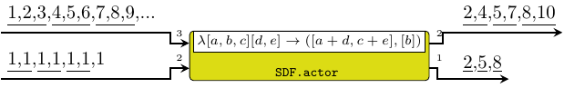
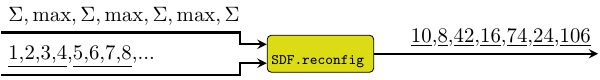
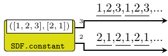
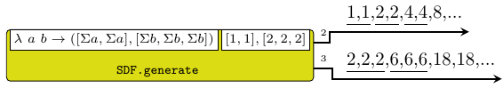
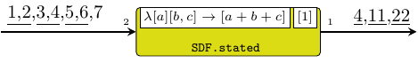
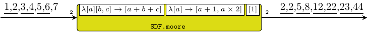
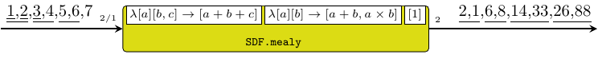
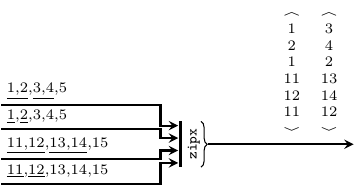
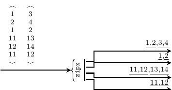

| Copyright | (c) George Ungureanu KTH/ICT/E 2015-2016 |
|---|---|
| License | BSD-style (see the file LICENSE) |
| Maintainer | ugeorge@kth.se |
| Stability | experimental |
| Portability | portable |
| Safe Haskell | Safe |
| Language | Haskell2010 |
ForSyDe.Atom.MoC.SDF
Description
The SDF library implements the atoms holding the sematics for the
synchronous data flow computation model. It also provides a set of
helpers for properly instantiating process network patterns as
process constructors.
IMPORTANT!!! see the naming convention rules on how to interpret, use and develop your own constructors.
Synchronous data flow (SDF) event
The synchronous data flow (SDF) MoC is the first untimed MoC
implemented by the forsyde-atom framework. On untimed MoCs,
[Lee98] states that: "when tags are
partially ordered rather than totally ordered, we say that the
system is untimed. Untimed systems cannot have the same notion of
causality as timed systems [see SY]. (...)
Processes defined in terms of constraints on the tags in the
signals (...) have a consistent cut rather than
simultaneity." Regarding SDF, it states that "is a special
case of Kahn process networks
[Kahn76]. A dataflow process is a Kahn
process that is also sequential, where the events on the
self-loop signal denote the firings of the dataflow actor. The
firing rules of a dataflow actor are partial ordering constraints
between these events and events on the inputs. (...)
Produced/consumed events are defined in terms of relations with
the events in the firing signal. It results that for the same
firing i, eᵢ < eₒ, as an intuitive sort of
causality constraint."
Based on the above insights, we can formulate a simplified
definition of the forsyde-atom interpretation of SDF:
- The SDF MoC
- is abstracting the execution semantics of a system where computation is performed according to firing rules where the production and the consumption rates are fixed.
Below is a possible behavior in time of the input and the output signals of a SDF process. Events sharing the same partial ordering in relation to one firing are overlined:

Implementing the SDF tag system implied a series of engineering decisions which lead to the following particularities:
- signals represent FIFO channels, and tags are implicit from
their position in the
Streamstructure. Internally,SDFsignals have exactly the same structure asSYsignals, whereas the partial ordering is imposed by the processes alone. - the
SDFevent constructor wraps only a value. - being an untimed MoC, the order between events is partial to the firings of processes. An SDF atom will fire only when there are enough events to trigger its inputs. Once a firing occurs, it will take care of partitioning the input or output signals.
- SDF atoms do require a context: the consumption c and production p rates. Also, the functions passed as arguments reflect the fact that multiple events are handled during a firing.
- the previous statement can be synthesized into the following
execution context, which also
justifies the SDF implementation of
Funand forRet:
The CT type, identifying a discrete time event and implementing an
instance of the MoC class. A discrete event explicitates its tag
which is represented as an integer.
Instances
| Functor SDF Source # | Allows for mapping of functions on a SDF event. |
| Applicative SDF Source # | Allows for lifting functions on a pair of SDF events. |
| Foldable SDF Source # | |
| Traversable SDF Source # | |
| MoC SDF Source # | Implenents the SDF semantics for the MoC atoms |
| Read a => Read (SDF a) Source # | Reads the value wrapped |
| Show a => Show (SDF a) Source # | Shows the value wrapped |
| Plottable a => Plot (Signal a) Source # |
|
| type Ret SDF a Source # | |
| type Fun SDF a b Source # | |
Aliases & utilities
A set of type synonyms and utilities are provided for convenience. The API type signatures will feature these aliases to hide the cumbersome construction of atoms and patters as seen in ForSyDe.Atom.MoC.
signal :: [a] -> Signal a Source #
Transforms a list of values into a SDF signal with only one partition, i.e. all events share the same (initial) tag.
readSignal :: Read a => String -> Signal a Source #
Reads a signal from a string. Like with the read function from
Prelude, you must specify the tipe of the signal.
>>>readSignal "{1,2,3,4,5}" :: Signal Int{1,2,3,4,5}
These SY process constructors are basically specific instantiations of the patterns of atoms defined in ForSyDe.Atom.MoC. Some are also wrapping functions in an extended behavioural model.
Simple
The delay process "delays" a signal with initial events built
from a list. It is an instantiation of the delay
constructor.
>>>let s = signal [1,2,3,4,5]>>>delay [0,0,0] s{0,0,0,1,2,3,4,5}

Arguments
| :: Signal a | signal containing the initial tokens |
| -> Signal a | input signal |
| -> Signal a | output signal |
Similar to the previous, but this is the raw instantiation of the
delay pattern. It appends the contents of one
signal at the head of another signal.
>>>let s1 = signal [0,0,0]>>>let s2 = signal [1,2,3,4,5]>>>delay' s1 s2{0,0,0,1,2,3,4,5}
Arguments
| :: ((Cons, Cons), (Prod, Prod), [a1] -> [a2] -> ([b1], [b2])) | function on lists of values, tupled with consumption / production rates |
| -> Signal a1 | first input signal |
| -> Signal a2 | second input signal |
| -> (Signal b1, Signal b2) | two output signals |
comb processes map combinatorial functions on signals and take
care of synchronization between input signals. It instantiates the
comb atom pattern (see comb22).
Constructors: comb[1-4][1-4].
>>>let s1 = signal [1..]>>>let s2 = signal [1,1,1,1,1,1,1]>>>let f [a,b,c] [d,e] = [a+d, c+e]>>>comb21 ((3,2),2,f) s1 s2{2,4,5,7,8,10}
Incorrect usage (not covered by doctest):
λ> comb21 ((3,2),3,f) s1 s2 *** Exception: [MoC.SDF] Wrong production
Arguments
| :: ((Cons, Cons), (Prod, Prod)) | |
| -> Signal ([a1] -> [a2] -> ([b1], [b2])) | function on lists of values, tupled with consumption / production rates |
| -> Signal a1 | first input signal |
| -> Signal a2 | second input signal |
| -> (Signal b1, Signal b2) | two output signals |
reconfig creates an SDF adaptive process where the first signal
carries functions and the other carry the arguments. It
instantiates the reconfig atom pattern (see
reconfig22). According to our SDF definition,
the production and consumption rates need to be fixed, so they are
passed as parameters to the constructor, whereas the first signal
carries adaptive functions only. For the adaptive signal it only
makes sense that the consumption rate is always 1.
Constructors: reconfig[1-4][1-4].
>>>let f1 a = [sum a]>>>let f2 a = [maximum a]>>>let sf = signal [f1,f2,f1,f2,f1,f2,f1]>>>let s1 = signal [1..]>>>reconfig11 (4,1) sf s1{10,8,42,16,74,24,106}

A signal generator which repeats the initial tokens
indefinitely. It is actually an instantiation of the stated0X
constructor (check stated22).
Constructors: constant[1-4].
>>>let (s1, s2) = constant2 ([1,2,3],[2,1])>>>takeS 7 s1{1,2,3,1,2,3,1}>>>takeS 5 s2{2,1,2,1,2}

Arguments
| :: ((Cons, Cons), (Prod, Prod), [b1] -> [b2] -> ([b1], [b2])) | function to generate next value, tupled with consumption / production rates |
| -> ([b1], [b2]) | values of initial tokens |
| -> (Signal b1, Signal b2) | generated signals |
A signal generator based on a function and a kernel value. It
is actually an instantiation of the stated0X constructor
(check stated22).
Constructors: generate[1-4].
>>>let f a b = ([sum a, sum a],[sum b, sum b, sum b])>>>let (s1,s2) = generate2 ((2,3),(2,3),f) ([1,1],[2,2,2])>>>takeS 7 s1{1,1,2,2,4,4,8}>>>takeS 8 s2{2,2,2,6,6,6,18,18}

Arguments
| :: ((Cons, Cons, Cons, Cons), (Prod, Prod), [b1] -> [b2] -> [a1] -> [a2] -> ([b1], [b2])) | next state function, tupled with consumption / production rates |
| -> ([b1], [b2]) | initial state partitions of values |
| -> Signal a1 | first input signal |
| -> Signal a2 | second input signal |
| -> (Signal b1, Signal b2) | output signals |
stated is a state machine without an output decoder. It is an
instantiation of the state MoC constructor (see
stated22).
Constructors: stated[1-4][1-4].
>>>let f [a] [b,c] = [a+b+c]>>>let s = signal [1,2,3,4,5,6,7]>>>stated11 ((1,2),1,f) [1] s{1,4,11,22}

Arguments
| :: ((Cons, Cons, Cons, Cons), (Prod, Prod), [b1] -> [b2] -> [a1] -> [a2] -> ([b1], [b2])) | next state function, tupled with consumption / production rates |
| -> ([b1], [b2]) | initial partitions of values |
| -> Signal a1 | first input signal |
| -> Signal a2 | second input signal |
| -> (Signal b1, Signal b2) | output signals |
state is a state machine without an output decoder. It is an
instantiation of the stated MoC constructor (see
state22).
Constructors: state[1-4][1-4].
>>>let f [a] [b,c] = [a+b+c]>>>let s = signal [1,2,3,4,5,6,7]>>>state11 ((1,2),1,f) [1] s{4,11,22}
Arguments
| :: ((Cons, Cons, Cons), Prod, [st] -> [a1] -> [a2] -> [st]) | next state function, tupled with consumption / production rates |
| -> (Cons, (Prod, Prod), [st] -> ([b1], [b2])) | output decoder, tupled with consumption / production rates |
| -> [st] | initial state values |
| -> Signal a1 | |
| -> Signal a2 | |
| -> (Signal b1, Signal b2) |
moore processes model Moore state machines. It is an
instantiation of the moore MoC constructor (see
moore22).
Constructors: moore[1-4][1-4].
>>>let ns [a] [b,c] = [a+b+c]>>>let od [a] = [a+1,a*2]>>>let s = signal [1,2,3,4,5,6,7]>>>moore11 ((1,2),1,ns) (1,2,od) [1] s{2,2,5,8,12,22,23,44}

Arguments
| :: ((Cons, Cons, Cons), Prod, [st] -> [a1] -> [a2] -> [st]) | next state function, tupled with consumption / production rates |
| -> ((Cons, Cons, Cons), (Prod, Prod), [st] -> [a1] -> [a2] -> ([b1], [b2])) | outpt decoder, tupled with consumption / production rates |
| -> [st] | initial state values |
| -> Signal a1 | |
| -> Signal a2 | |
| -> (Signal b1, Signal b2) |
mealy processes model Mealy state machines. It is an
instantiation of the mealy MoC constructor
(see mealy22).
Constructors: mealy[1-4][1-4].
>>>let ns [a] [b,c] = [a+b+c]>>>let od [a] [b] = [a+b,a*b]>>>let s = signal [1,2,3,4,5,6,7]>>>mealy11 ((1,2),1,ns) ((1,1),2,od) [1] s{2,1,6,8,14,33,26,88}

Interfaces
toSY2 :: Signal a -> Signal b -> (Signal a, Signal b) Source #
Transforms a (set of) SDF signal(s) into
the equivalent SY signal(s). The only change
is the event consructor. The partial order of DE is interpreted as
SY's total order, based on the positioning of events in the signals
(e.g. FIFO buffers) at that moment.
Constructors: toSY[1-4].
>>>let s = SDF.signal [1,2,3,4,5]>>>toSY s{1,2,3,4,5}
Arguments
| :: Vector Cons | consumption rates |
| -> Vector (Signal a) | vector of signals |
| -> Signal (Vector a) | signal of vectors |
Consumes tokens from a vector of signals and merges them into a
signal of vectors, with a production rate of 1. It instantiates the
zipx skeleton.
>>>let s1 = SDF.signal [1,2,3,4,5]>>>let s2 = SDF.signal [11,12,13,14,15]>>>let v1 = V.vector [s1,s1,s2,s2]>>>let r = V.vector [2,1,2,1]>>>v1<{1,2,3,4,5},{1,2,3,4,5},{11,12,13,14,15},{11,12,13,14,15}>>>>zipx r v1{<1,2,1,11,12,11>,<3,4,2,13,14,12>}

Arguments
| :: Vector Prod | production rates (in reverse order) |
| -> Signal (Vector a) | signal of vectors |
| -> Vector (Signal a) | vector of signals |
Consumes the vectors carried by a signal with a rate of 1, and
unzips them into a vector of signals based on the user provided
rates. It instantiates the unzipx
skeleton.
OBS: due to the recur pattern
contained by unzipx, the vector of
production rates needs to be provided in reverse order (see
ForSyDe.Atom.Skeleton.Vector).
>>>let s1 = SDF.signal [1,2,3,4,5]>>>let s2 = SDF.signal [11,12,13,14,15]>>>let v1 = V.vector [s1,s1,s2,s2]>>>let r = V.vector [2,1,2,1]>>>let sz = zipx r v1>>>v1<{1,2,3,4,5},{1,2,3,4,5},{11,12,13,14,15},{11,12,13,14,15}>>>>sz{<1,2,1,11,12,11>,<3,4,2,13,14,12>}>>>unzipx (V.reverse r) sz<{1,2,3,4},{1,2},{11,12,13,14},{11,12}>
